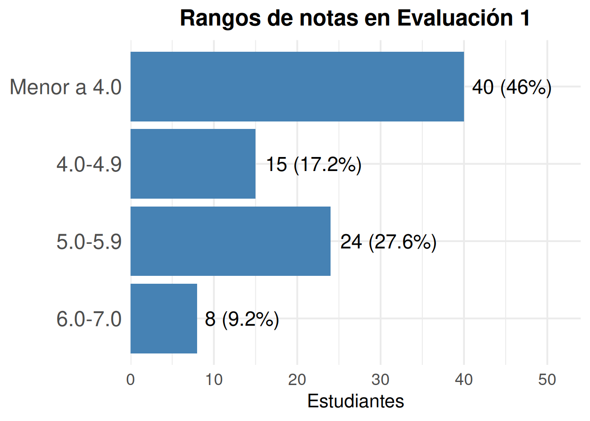
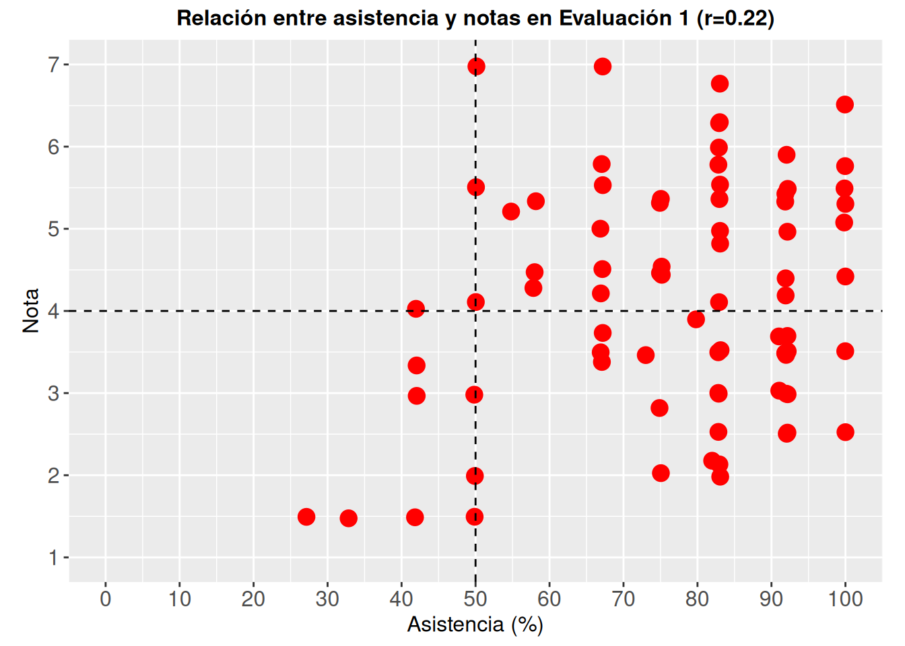

Ver código
pacman::p_load(tidyverse, sjmisc, sjPlot, kableExtra, sjlabelled, readxl, janitor, here)lunes septiembre 21, 2026 at 12:00 AM
Este reporte realiza un análisis de la Evaluación 1 sobre la Unidad 1: Inferencia estadística
La pauta de evaluación se puede revisar aquí
Solicitudes hasta el Jueves 1 de Octubre 23:59, las solicitudes se responderán en un plazo máximo el miércoles 7 de Octubre.
Se unen (por RUT) los puntajes por pregunta y la nota (columna “Nota + bonus”) con la asistencia descargada desde U-Cursos.
rut_lista <- read_excel(here("news/data/notas.xls")) %>%
clean_names() %>%
pull(rut)
asistencia <- read_excel(here("news/data/asistencia.xls"), .name_repair = "minimal")
asistencia <- asistencia[, 1:4] %>%
set_names(c("n", "persona", "rut", "asistencia")) %>%
mutate(asistencia = parse_number(asistencia)) %>% # "67%" -> 67
select(rut, asistencia)
puntajes <- read_excel(here("news/data/Puntajes prueba 1.xlsx"), .name_repair = "minimal")
names(puntajes) <- c("n", "persona", "rut", "corrector", "forma", "p1a", "p1b", "p1c",
"p2a", "p2b", "p2c", "p2d", "bonus", "puntaje", "nota_puntajes", "nota_bonus")
puntajes <- puntajes %>%
mutate(across(c(p1a:puntaje), ~ as.numeric(str_replace(as.character(.x), ",", "."))), # p1c trae comas decimales
forma = if_else(forma %in% c("A", "B"), forma, NA_character_)) %>%
# se adaptan las preguntas 2 de la forma B a la forma A: 2aB = 2bA, 2bB = 2cA, 2cB = 2dA, 2dB = 2aA
mutate(p2a_b = p2a, p2b_b = p2b, p2c_b = p2c, p2d_b = p2d,
p2a = if_else(forma == "B", p2d_b, p2a),
p2b = if_else(forma == "B", p2a_b, p2b),
p2c = if_else(forma == "B", p2b_b, p2c),
p2d = if_else(forma == "B", p2c_b, p2d)) %>%
select(-ends_with("_b")) %>%
# quienes no rindieron tienen todo vacío (puntaje 0 / nota 1 solo por defecto)
mutate(across(c(p1a:puntaje), ~ if_else(is.na(p1a), NA_real_, .x))) %>%
select(rut, persona, corrector, forma, p1a:p2d, bonus, puntaje, nota = nota_bonus) %>% # nota = nota + bonus
mutate(nota = floor(nota * 10 + 0.5 + 1e-9) / 10) # redondeo a 1 decimal (mitad hacia arriba), como U-Cursos
prueba1 <- puntajes %>%
left_join(asistencia, by = "rut")
stopifnot(nrow(prueba1) == length(rut_lista), !anyDuplicated(prueba1$rut))Un caso (corrector JC) trae en forma el valor “2.0” (error de digitación); queda como forma perdida.
prueba1 <- prueba1 %>%
set_label(c(persona = "Estudiante", corrector = "Corrector/a", forma = "Forma de la prueba",
p1a = "1a: Hipótesis", p1b = "1b: Valor t", p1c = "1c: Intervalo",
p2a = "2a: 2 muestras", p2b = "2b: Intervalos", p2c = "2c: Alfa y p", p2d = "2d: Hijos",
bonus = "Bonus", puntaje = "Puntaje total (con bonus)",
nota = "Nota final", asistencia = "Asistencia (%)")[names(.)])Sin nota (no rindieron la prueba): 21. Sin registro de asistencia: 2.
| var | label | n | mean | sd | range | |
|---|---|---|---|---|---|---|
| 4 | p1a | 1a: Hipótesis | 87 | 1.16 | 0.90 | 3 (0-3) |
| 5 | p1b | 1b: Valor t | 87 | 2.43 | 1.38 | 4 (0-4) |
| 6 | p1c | 1c: Intervalo | 87 | 0.68 | 0.70 | 2 (0-2) |
| 7 | p2a | 2a: 2 muestras | 87 | 0.21 | 0.41 | 1 (0-1) |
| 8 | p2b | 2b: Intervalos | 87 | 0.54 | 0.50 | 1 (0-1) |
| 9 | p2c | 2c: Alfa y p | 87 | 0.32 | 0.47 | 1 (0-1) |
| 10 | p2d | 2d: Hijos | 87 | 0.34 | 0.48 | 1 (0-1) |
| 2 | bonus | Bonus | 87 | 0.31 | 0.23 | 0.5 (0-0.5) |
| 11 | puntaje | Puntaje total (con bonus) | 87 | 5.99 | 2.82 | 11.5 (0-11.5) |
| 3 | nota | Nota final | 87 | 4.16 | 1.46 | 6 (1-7) |
| 1 | asistencia | Asistencia (%) | 106 | 74.63 | 20.65 | 75 (25-100) |
prueba1 %>%
filter(!is.na(nota)) %>%
mutate(notas_cat = cut(nota, breaks = c(-Inf, 3.95, 4.95, 5.95, Inf),
labels = c("Menor a 4.0", "4.0-4.9", "5.0-5.9", "6.0-7.0"))) %>%
count(notas_cat) %>%
mutate(pct = n / sum(n)) %>%
ggplot(aes(x = n, y = fct_rev(notas_cat))) +
geom_col(fill = "steelblue") +
geom_text(aes(label = paste0(n, " (", round(pct * 100, 1), "%)")), hjust = -0.1, size = 6) +
scale_x_continuous(expand = expansion(mult = c(0, 0.35))) +
labs(title = "Rangos de notas en Evaluación 1", x = "Estudiantes", y = NULL) +
theme_minimal(base_size = 16) +
theme(plot.title = element_text(face = "bold", hjust = 0.5),
axis.text.y = element_text(size = 18),
axis.text.x = element_text(size = 14),
axis.title = element_text(size = 16))
r <- cor(prueba1$asistencia, prueba1$nota, use = "complete.obs")
ggplot(prueba1, aes(x = asistencia, y = nota)) +
geom_jitter(width = 0.2, color = "red", size = 4) +
labs(title = paste0("Relación entre asistencia y notas en Evaluación 1 (r=", round(r, 2), ")"),
x = "Asistencia (%)", y = "Nota") +
theme(axis.title = element_text(size = 12),
axis.text = element_text(size = 12),
aspect.ratio = 1/1.5,
plot.title = element_text(size = 12, face = "bold", hjust = 0.5)) +
scale_x_continuous(breaks = seq(0, 100, by = 10), limits = c(0, 100)) +
scale_y_continuous(breaks = 1:7, limits = c(1, 7)) +
geom_vline(xintercept = 50, linetype = "dashed") +
geom_hline(yintercept = 4, linetype = "dashed")
cuadrantes <- prueba1 %>%
filter(!is.na(nota), !is.na(asistencia)) %>%
mutate(cuadrante = case_when(
asistencia >= 50 & nota >= 4 ~ "Asistencia alta y nota ≥ 4.0",
asistencia >= 50 & nota < 4 ~ "Asistencia alta y nota < 4.0",
asistencia < 50 & nota >= 4 ~ "Asistencia baja y nota ≥ 4.0",
asistencia < 50 & nota < 4 ~ "Asistencia baja y nota < 4.0")) %>%
group_by(cuadrante) %>%
summarise(n = n(), nota_media = mean(nota)) %>%
mutate(pct = n / sum(n) * 100)
cuadrantes %>%
transmute(Cuadrante = cuadrante, N = n, `% estudiantes` = pct, `Nota promedio` = nota_media) %>%
kable(digits = 1)| Cuadrante | N | % estudiantes | Nota promedio |
|---|---|---|---|
| Asistencia alta y nota < 4.0 | 35 | 40.7 | 2.9 |
| Asistencia alta y nota ≥ 4.0 | 45 | 52.3 | 5.3 |
| Asistencia baja y nota < 4.0 | 5 | 5.8 | 2.2 |
| Asistencia baja y nota ≥ 4.0 | 1 | 1.2 | 4.0 |
Considerando a los 86 estudiantes con nota y asistencia, y usando como puntos de corte la nota 4.0 y el 50% de asistencia:
| 1a: Hipótesis | 1b: Valor t | 1c: Intervalo | 2a: 2 muestras | 2b: Intervalos | 2c: Alfa y p | 2d: Hijos | Puntaje total (con bonus) | Nota final | Asistencia (%) | |
| 1a: Hipótesis | ||||||||||
| 1b: Valor t | 0.251* | |||||||||
| 1c: Intervalo | 0.314** | 0.561*** | ||||||||
| 2a: 2 muestras | 0.104 | 0.244* | 0.166 | |||||||
| 2b: Intervalos | 0.335** | 0.218* | 0.182 | 0.276* | ||||||
| 2c: Alfa y p | -0.146 | -0.250* | -0.138 | 0.154 | 0.184 | |||||
| 2d: Hijos | 0.095 | 0.141 | 0.065 | 0.140 | 0.353*** | 0.187 | ||||
| Puntaje total (con bonus) | 0.597*** | 0.769*** | 0.673*** | 0.446*** | 0.567*** | 0.067 | 0.402*** | |||
| Nota final | 0.596*** | 0.758*** | 0.673*** | 0.440*** | 0.558*** | 0.079 | 0.390*** | 0.997*** | ||
| Asistencia (%) | 0.329** | -0.024 | 0.125 | 0.029 | 0.262* | 0.059 | -0.014 | 0.209 | 0.224* | |
| Computed correlation used pearson-method with listwise-deletion. | ||||||||||
Consistencia interna
Some items ( p2c ) were negatively correlated with the first principal component and
probably should be reversed.
To do this, run the function again with the 'check.keys=TRUE' option[1] 0.5402977